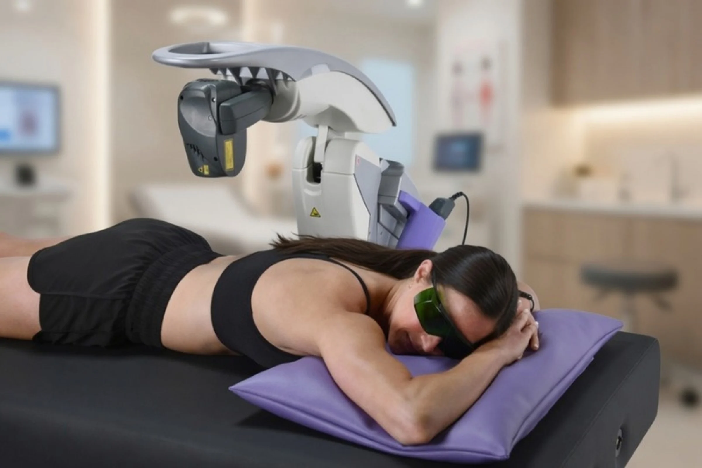
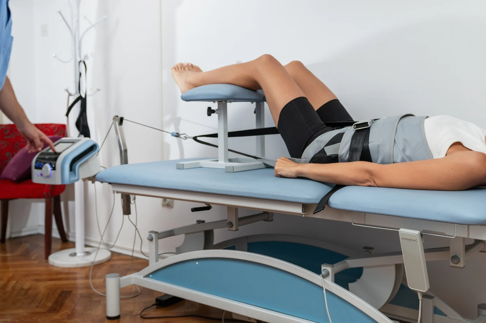
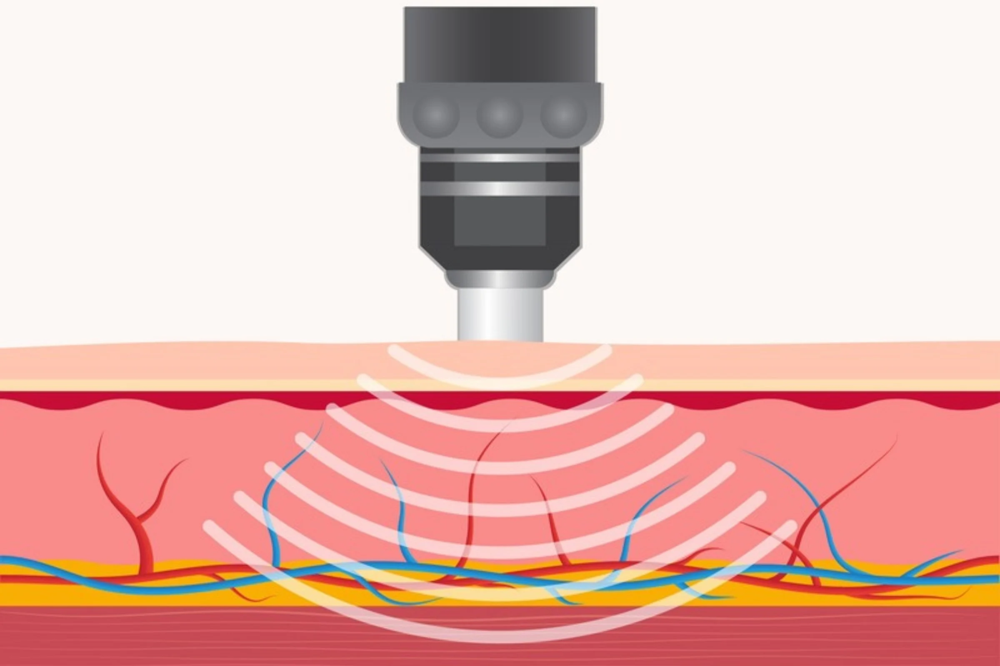
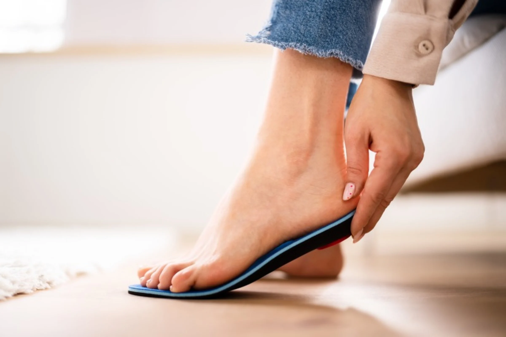

The root cause, not the symptom
We look for what is actually driving the pain, then explain what we find before anything else happens.
Care here starts with listening. We take the time to understand where your discomfort begins, then build a simple plan around your goals.
At Stull Chiropractic Center, our mission is to help every patient achieve lasting health through natural, personalized, and effective chiropractic care. We identify the true cause of pain, restore proper function, and give patients the tools and education they need to live active, pain-free lives.
As trusted Veteran VA providers, we deliver high-quality, conservative care to veterans and the wider community. Our goal is to improve mobility, support long-term spinal health, and give each patient a clear treatment plan tailored to their needs.
Choosing a Kettering chiropractor means a natural, hands-on approach to your health. By supporting your body's own ability to recover, our care helps you take an active role in feeling better.
We look for what is actually driving the pain, then explain what we find before anything else happens.
Adjustment, decompression, laser, shockwave and orthotics, chosen for what your body actually needs.

MLS laser therapyCome in, tell us what is going on, and hear what we would do about it before you commit to anything.
"Amazing people! Dr. Stull is always on schedule and very kind and patient. He has fixed my TMJ, back, and orthotics!"Angie S.

Spinal decompressionFive core services, each with its own page. Start with whichever fits, or call and we will point you to the right one.

Gentle, precise adjustments aimed at restoring alignment so the nerves and muscles can do their job.
01For disc-related pain that has not settled with rest.
02Focused light over the sore area to settle inflammation, with no recovery time after.
03
For stubborn soft-tissue pain that has stopped responding to rest.
04
Supports molded to your own feet, for when the problem starts from the ground up.
05A few of the things patients have said about the care they have had at Stull Chiropractic Center.
I've been a chiropractic patient for 35 years and my chiropractor retired 3 years ago. I came across Dr. John and I didn't think I could ever replace my chiropractor with an equal — but Dr. John is that equal. The staff is likewise incredible and always works to get you in as soon as they can.
P Paul W.I've been going to Stull Chiropractic Center since I was a few days old. I've never had a bad experience. The laser therapy was an incredible help when I sprained my ankle.
M Megan GreshamAmazing people! Dr. Stull is always on schedule and very kind and patient. He has fixed my TMJ, back, and orthotics!
A Angie S.We start by listening carefully to understand what is going on, then build a plan shaped around your body and your goals, so your care fits your life rather than the other way around.
2200 Woodman Drive
Kettering, OH 45420
Answers to some of the questions we hear most from patients in Kettering.
Ask us directly